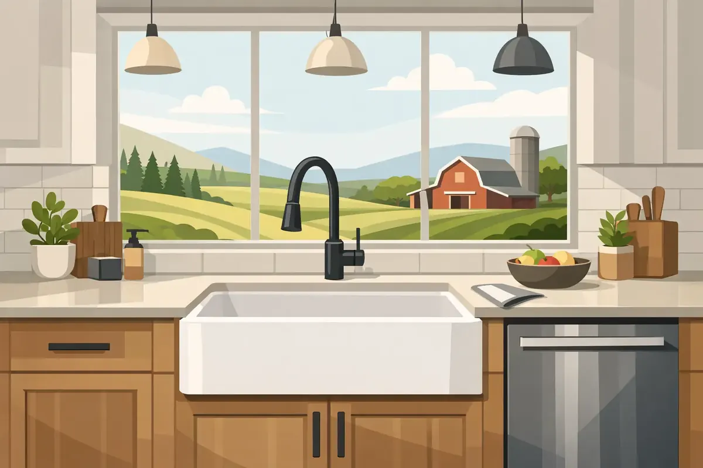

A farmhouse sink changes more than the look of a kitchen. Its deep basin makes meal prep, large pots, and family cleanup easier, but its size and weight also place real demands on the cabinet, countertop, water lines, and drain. For farm sink installation in Woodbury TN, the best result starts with planning the structure and plumbing before the sink arrives.
A properly installed farm sink should feel solid, drain quickly, sit at the right height, and leave enough working room for a faucet and any accessories. Cutting a cabinet opening without confirming those details can turn a welcome kitchen upgrade into an expensive correction later.
Why Farm Sinks Need More Planning
Unlike a standard drop-in sink, a farm sink - also called an apron-front sink - extends over the front of the base cabinet. Many models are made of fireclay, cast iron, or natural stone. Those materials are attractive and durable, but they can be exceptionally heavy. A large fireclay sink can weigh well over 100 pounds before it is filled with water and dishes.
That weight should rest on a purpose-built support system inside the cabinet, not on the countertop alone or on a few cabinet fasteners. The cabinet face often needs to be cut or modified to accommodate the apron. Depending on the sink style, the countertop opening may also need adjustment.
The plumbing beneath the sink can require changes as well. Farm sinks are generally deeper than a typical kitchen sink, so the drain outlet may sit lower. If the existing drain stub-out is too high, there may not be enough fall for the trap assembly. Garbage disposal location, dishwasher discharge connections, filtration equipment, and shutoff valve access all deserve a close look before installation day.
Choosing the Right Sink for Your Existing Kitchen
The sink material and mounting style affect the installation work. An undermount farm sink mounts beneath the countertop and creates a clean, continuous edge for wiping crumbs into the basin. It requires careful countertop fabrication and secure support. A flush-mount or countertop-mounted model may be a better fit in some kitchens, particularly during a countertop replacement.
Fireclay sinks offer the classic white farmhouse appearance many homeowners want. They resist staining well, but they can chip if a heavy item hits the edge. Cast iron sinks have a durable enameled finish and a substantial feel, though they are heavy and may require diligent care to avoid damage to the enamel. Stainless steel apron-front sinks are lighter, practical, and often easier to coordinate with modern appliances. The right choice depends on the kitchen design, budget, cabinet construction, and how the family uses the space.
Measure more than the sink opening. Confirm the cabinet width, interior depth, available space for the faucet, and the distance from the sink bottom to the existing drain connection. A sink that looks right in a showroom can create trouble at home if its bowl depth conflicts with the drain line or disposal.
Faucet and Backsplash Clearance Matter
Farm sinks commonly move the bowl forward, which can change faucet placement. If the faucet mounts through the countertop, there must be enough room behind the sink for the faucet base, handle movement, and backsplash. A pull-down faucet may need clearance above and behind it when the handle operates.
This is especially important when a countertop is already installed. Drilling into stone or quartz after the fact requires precision, and an incorrectly located faucet hole is not a minor repair. A professional layout helps ensure the sink, faucet, soap dispenser, air gap, and water-filtration faucet work together rather than compete for limited space.
What a Professional Farm Sink Installation Includes
A careful installation begins with inspecting the cabinet, countertop, supply lines, shutoff valves, and drain arrangement. If the cabinet needs reinforcement, the support framing should be sized and secured to carry the sink safely. The goal is to distribute weight into the cabinet structure while keeping the sink level from front to back and side to side.
Next comes the cabinet and countertop preparation. The apron opening needs clean, accurate cuts that preserve the cabinet's strength and provide an even reveal around the sink. With an undermount model, the sink must be positioned so the countertop fabricator can create the correct opening and finish the edge properly.
The plumbing connections come after the sink is secured. Water supply lines are connected to the faucet, and the drain assembly is configured for reliable flow. When a disposal is part of the plan, its added weight and clearance needs should be considered. The dishwasher drain line must be routed and secured correctly, and any unused openings should be sealed.
Finally, the system should be tested with water running at full flow. The technician checks every connection for leaks, confirms the basin drains without standing water, and makes sure the sink remains stable under normal use. A sink can look finished while a slow drip behind the cabinet is already causing damage, so testing is never a step to skip.
Common Problems to Avoid During Farm Sink Installation in Woodbury TN
The most common issue is inadequate support. Adhesive and countertop clips are not a substitute for a properly built cradle or support frame when the sink is heavy. A sink that shifts even slightly can strain plumbing connections, crack caulk, and damage the countertop edge.
Another concern is drain height. Homeowners often discover too late that a deep-bowl sink leaves little room between the drain and the cabinet floor. The P-trap must still be installed correctly, with enough slope for drainage and access for future service. Forcing the drain components into an awkward arrangement can lead to slow draining, leaks, or repeated clogs.
It is also wise to inspect old shutoff valves and supply lines during the project. This is the time to replace corroded valves, brittle hoses, or questionable fittings before they are hidden behind a full sink cabinet. Small preventative improvements can protect a newly remodeled kitchen from an avoidable water leak.
Countertop timing is another factor. If you are replacing cabinets and counters, the sink selection should be finalized early. The cabinet installer, countertop fabricator, and plumber need accurate sink specifications. If only the sink is being replaced, the existing countertop and cabinet may limit which models can be installed without major alterations. There is no one-size-fits-all answer, and a site evaluation can prevent a costly mismatch.
When to Schedule the Plumbing Work
For a full kitchen remodel, plumbing rough-in work may happen before cabinets and countertops are complete, followed by final connections after the sink and faucet are in place. For a replacement project, installation may be more direct, but the cabinet modification and sink support still need to happen before final plumbing connections.
Keep the sink manufacturer's template and installation instructions available. Dimensions can vary between models that appear nearly identical, and a technician should work from the actual product specifications rather than a general cabinet measurement. If the sink has arrived, inspect it for damage before cutting the cabinet or scheduling countertop work.
Angle Stop Plumbing brings 31 years of experience to kitchen plumbing projects across Middle Tennessee, with respectful technicians, upfront pricing, and workmanship backed by a guarantee. A professional assessment can help you understand whether your selected farm sink works with your existing cabinet and drain configuration before changes begin.
A farm sink should make your kitchen more useful every day, not create hidden stress behind the cabinet doors. Start with sound support, accurate measurements, and plumbing that is built to serve your family well for years to come.